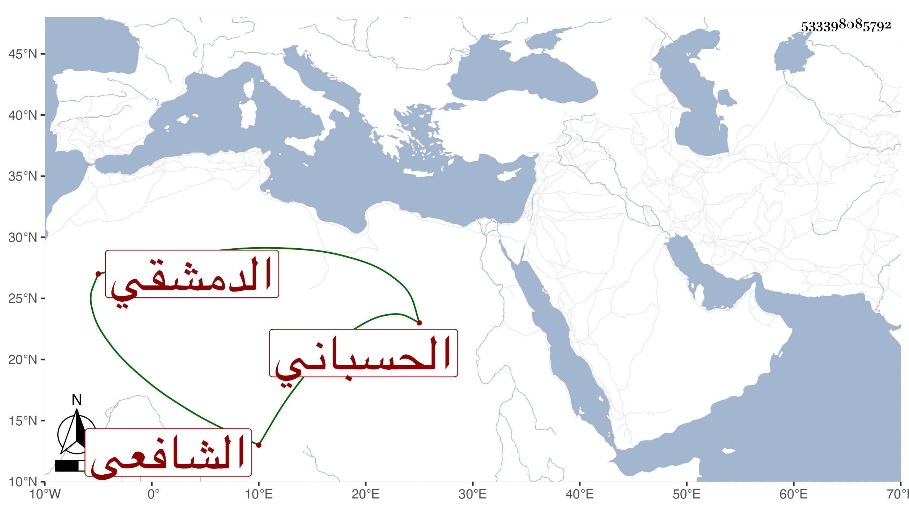

0902Sakhawi.DawLamic.ITO20230111-ara1.EIS1600.533398085792
Biography ID: 533398085792
367
محمد بن أيوب بن سعيد بن علوي الحسباني الأصل الدمشقي الشافعي الماضي أبوه . ولد سنة بضع وسبعين وحفظ القرآن والمحرر لابن عبد الهادي والمنهاج وغيرهما وتفقه بالشهاب الزهري والشريشي والصرخدي وغيرهم ولازم الملكاوي حتى قرأ عليه أكثر المنهاج ومهر في الفقه والحديث ، وجلس للأشغال بالجامع وانتفع به الطلبة ، وكان قليل الغيبة والحسد بل حلف أنه ما حسد أحدا . مات مطعونا في ربيع الآخر سنة تسع عشرة . قاله شيخنا في إنبائه .
